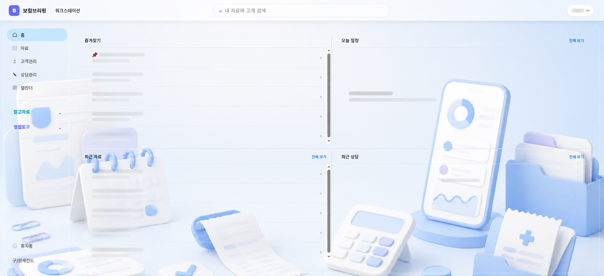

01
자료
업무노트, 메모, 링크와 파일을 폴더별로 정리하고 한 번에 검색합니다.
WORKSTATION
필요한 자료를 찾는 순간부터 고객·상담 기록과 다음 일정까지, 매일의 영업 업무를 하나의 흐름으로 이어갑니다.
워크스테이션 시작하기
업무노트, 메모, 링크와 파일을 폴더별로 정리하고 한 번에 검색합니다.
고객 기본정보와 연결된 자료, 다음에 챙길 일정을 함께 관리합니다.
고객별 상담 내용과 후속 조치를 기록해 업무 흐름을 이어갑니다.
개인 일정과 상담·고객관리 일정을 월·주·일 보기로 확인합니다.
ONE FLOW
INSURANCE BRIEFING